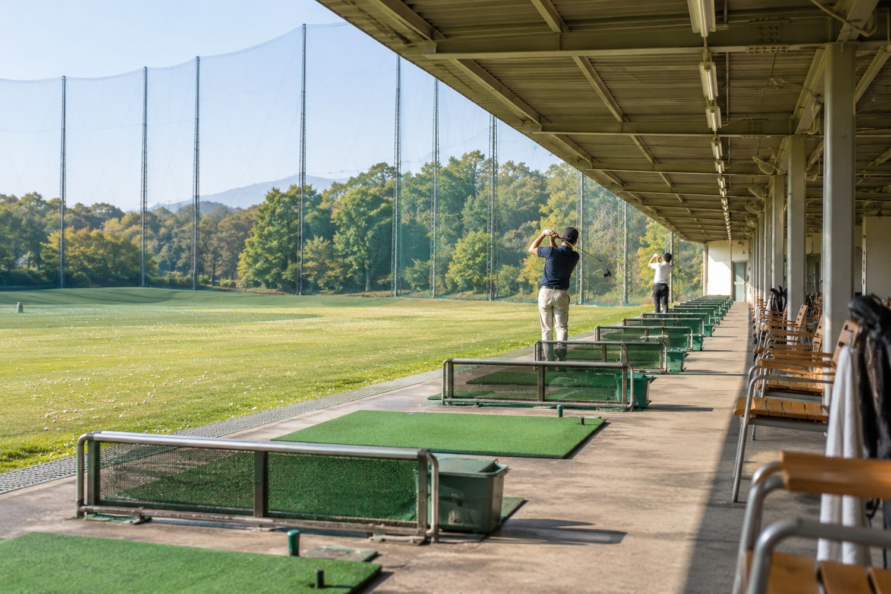
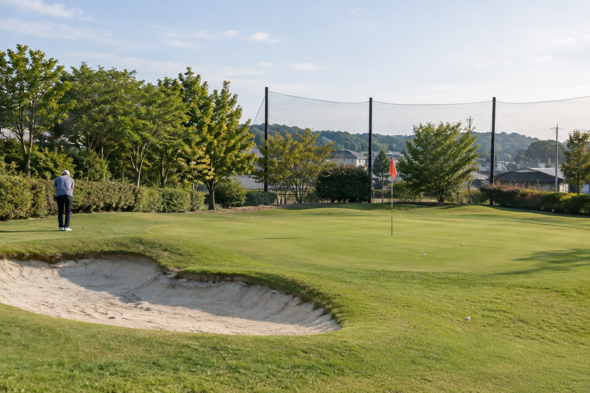
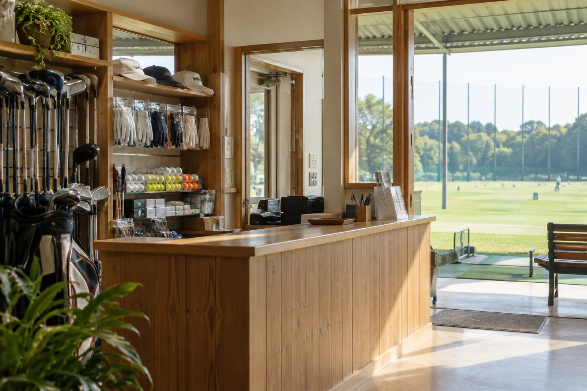
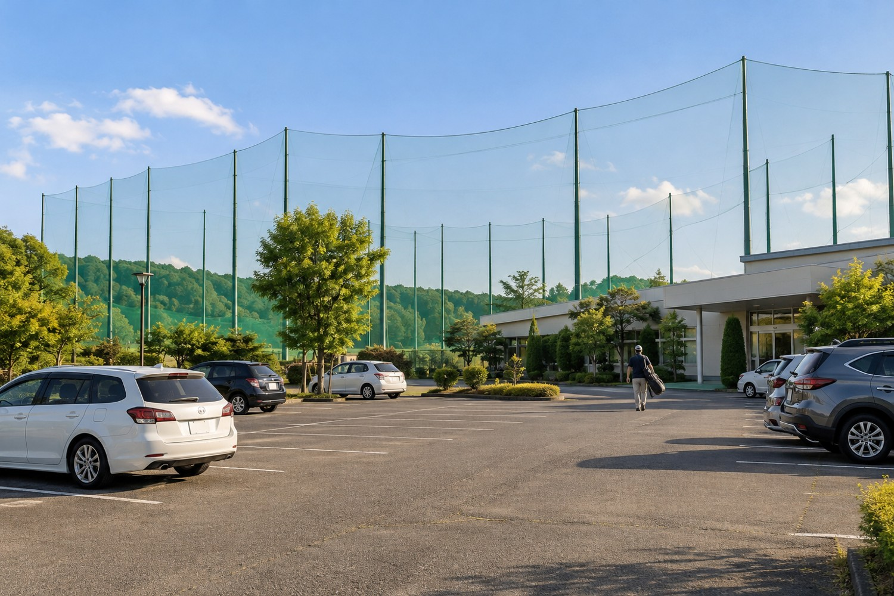
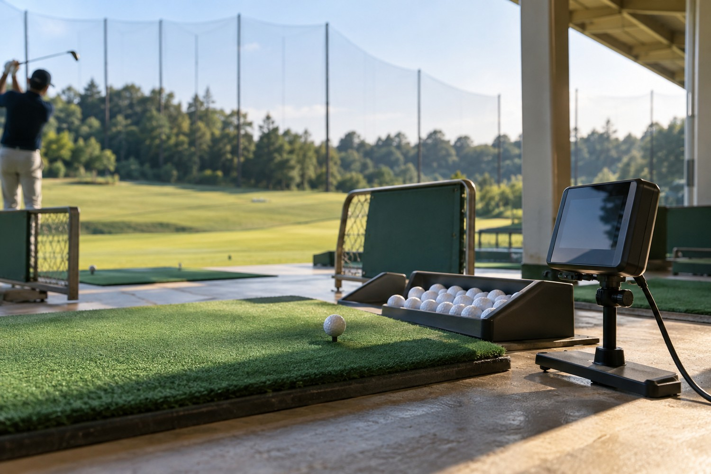

01 ／ 1階・2階の打席
60打席で、自分のリズムを。
距離感をつかみやすい1階、弾道を見渡せる2階。それぞれ30打席。屋根付きなので、天候に合わせて快適に練習できます。
いつもの練習を、心地よく。
フルショットからショートゲームまで。目的に合わせて、施設を使い分けられます。

01 ／ 1階・2階の打席
距離感をつかみやすい1階、弾道を見渡せる2階。それぞれ30打席。屋根付きなので、天候に合わせて快適に練習できます。

02 ／ アプローチ練習場
芝からの寄せやバンカー練習に。30分500円で、ショートゲームをじっくり磨けます。

03 ／ パター練習場
打席利用の方は無料。距離感と方向性を整える、仕上げの練習にご利用ください。

04 ／ 受付・ショップ
ボール、グローブなどの消耗品をご用意。レンタルクラブの受付もこちらで承ります。

05 ／ 駐車場
平面駐車場80台。大きなゴルフバッグも運びやすく、施設利用中は無料です。

06 ／ 弾道計測器
対象12打席で利用可能。飛距離や弾道の傾向を確認し、練習テーマを見つけられます。利用方法はスタッフへ。
まずは、気軽に一球から。